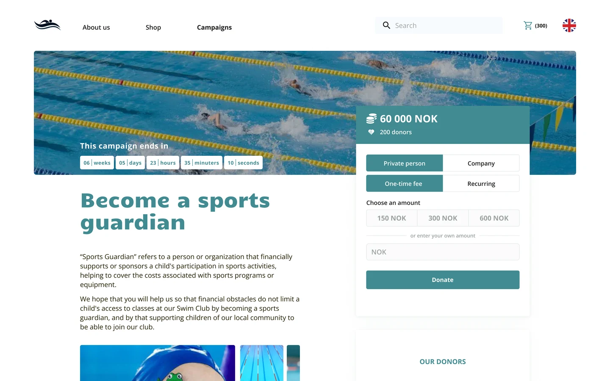
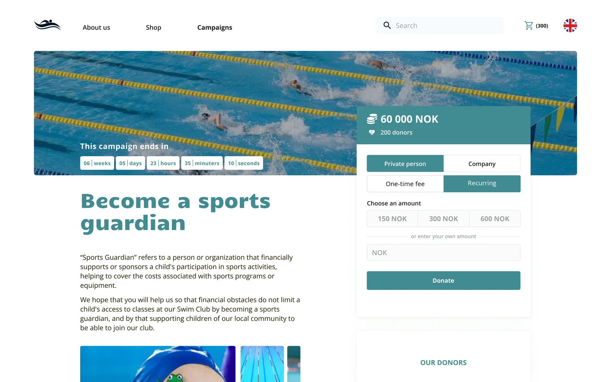
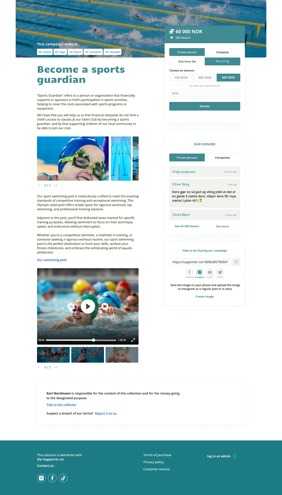
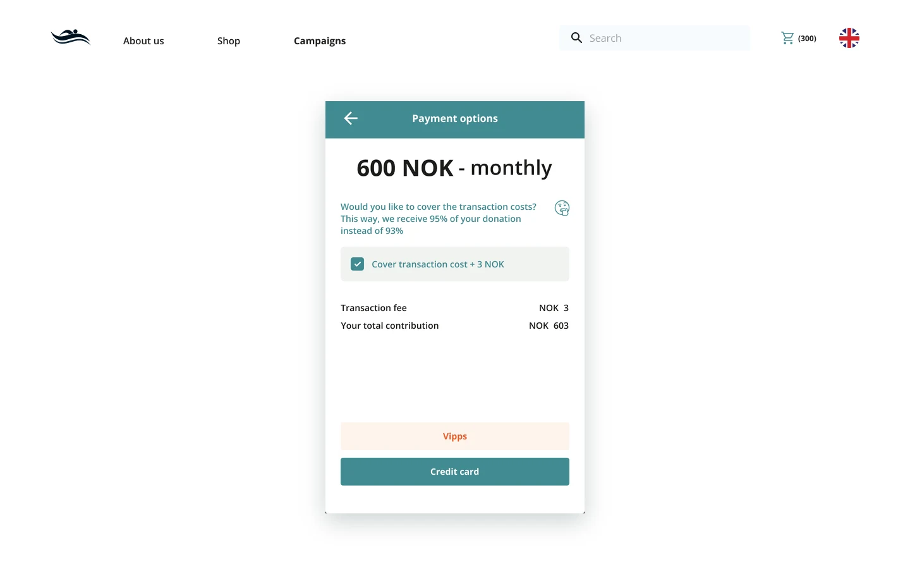
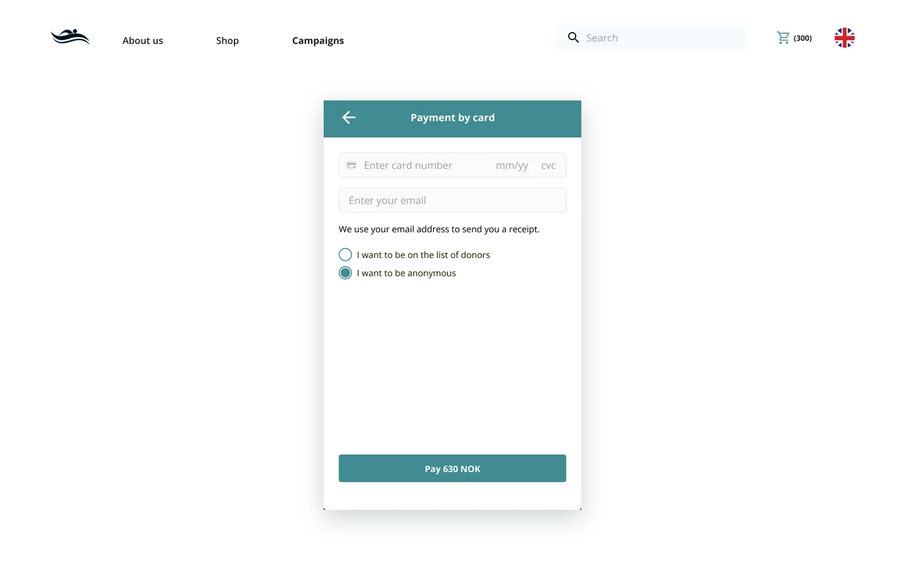
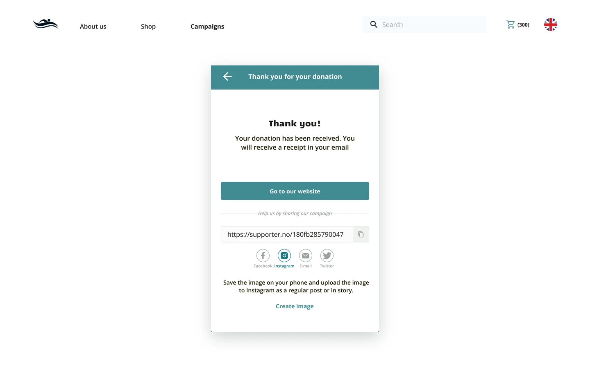
Web platform for Supporter.no
A fundraising page any sports club can open in minutes, so no child leaves sport because of money.
About
Sport Guardian (Idrettsfadder in Norwegian) is a crowdfunding solution from Supporter.no. A club starts a campaign, and private people and companies become its sports guardians: they give once or every month, and the money covers fees, gear and travel for children whose families cannot pay.
Problem
Sport costs money, and the cost is what makes children quit first. 185,000 Norwegians cancelled a sports club membership last year, and the drop was largest among children and young people. Clubs had no simple way to ask their community for help.
Solution
A campaign page that shows the countdown, the amount raised and the people behind it, and a donation that takes four choices: private person or company, once or recurring, the amount, then card or Vipps. Behind it, a builder that lets a club publish a campaign without help, and an admin panel with donors, refunds and statistics.
Product and brand
Mockups, not a real campaign
The markA slanted S and G in Candal, cut into strips with a checkered trail: speed for the sport, and the G that carries the S for the guardian.
On the streetA poster by the pitch, where the people who could help already stand on Saturday mornings.

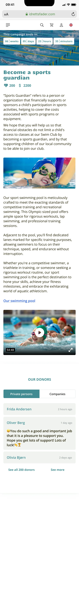
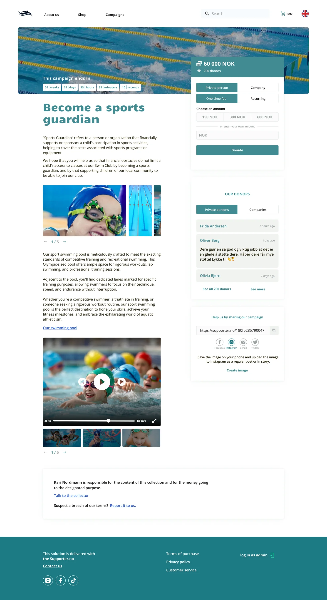

In the clubDecks, caps and bottles in the club's teal and green, so the guardians are seen at every training.


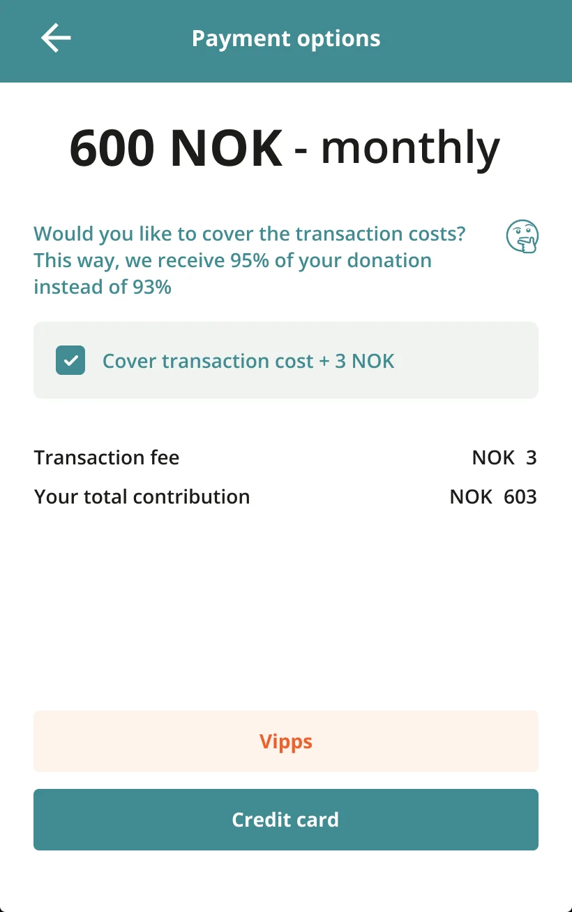
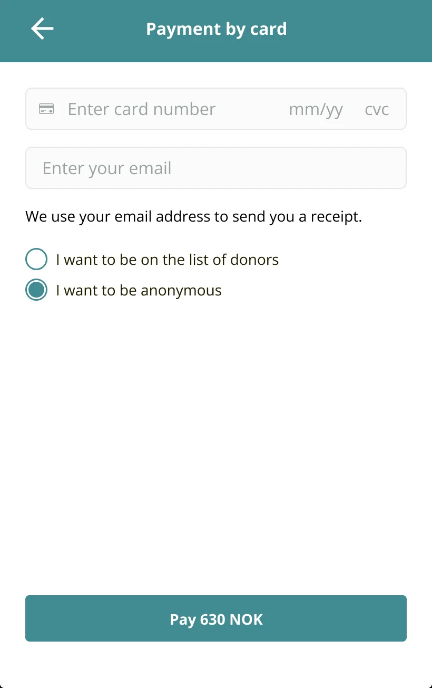
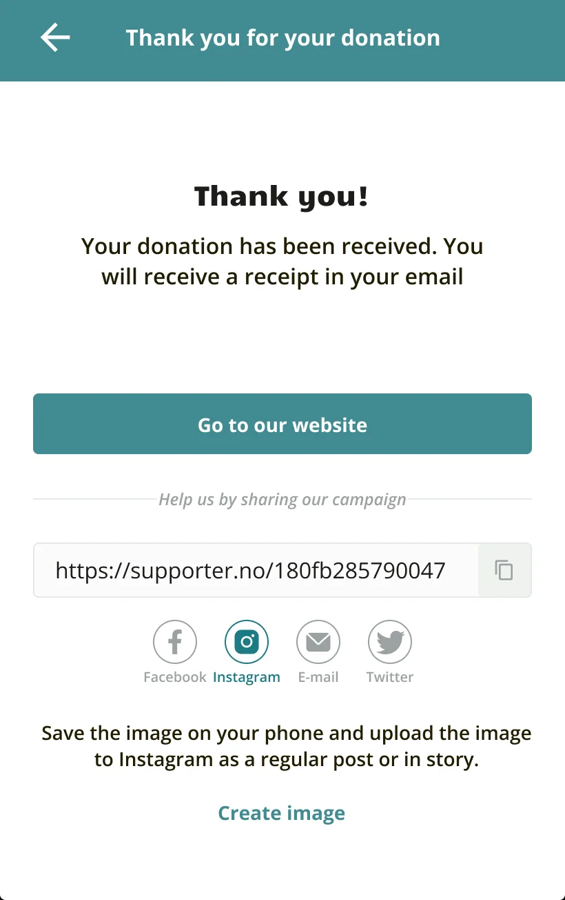


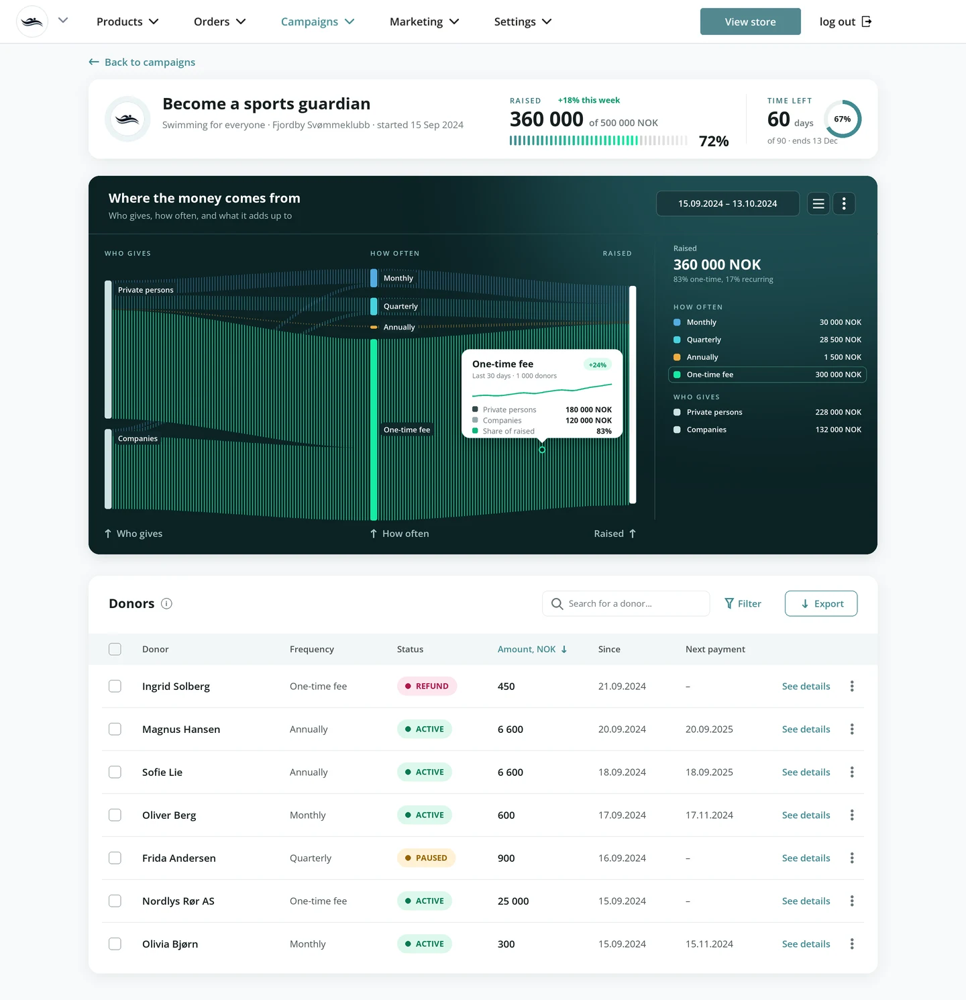